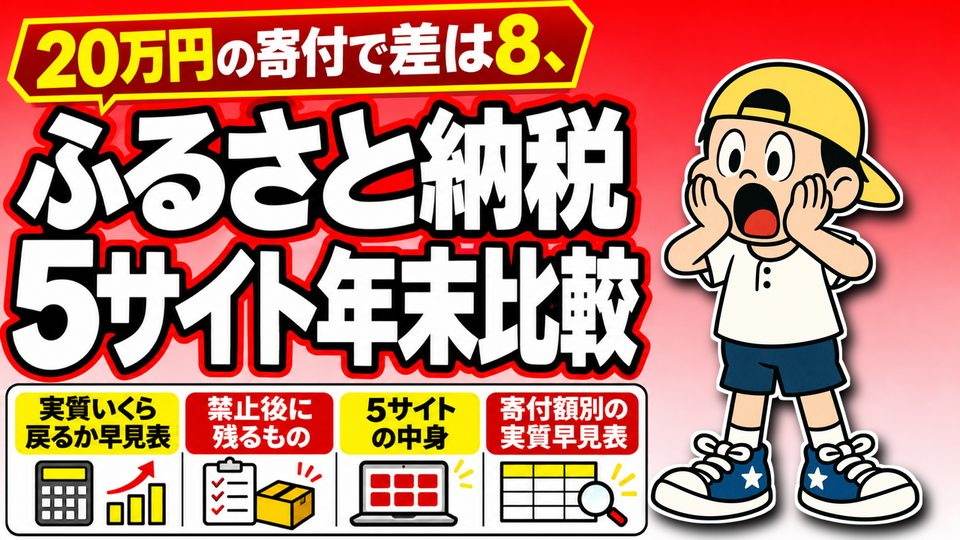
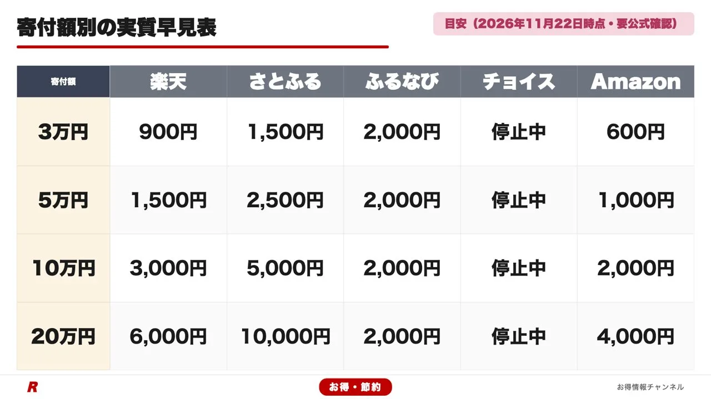
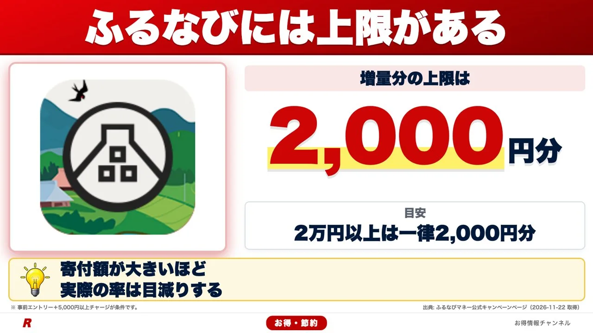
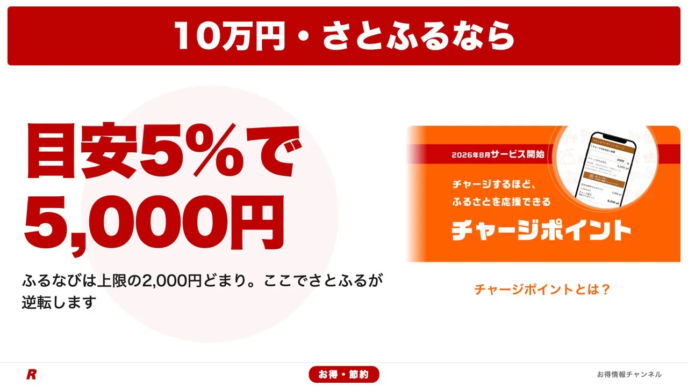
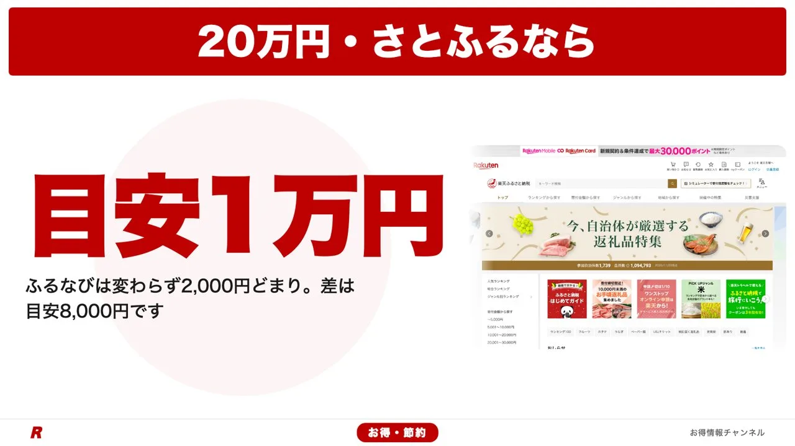
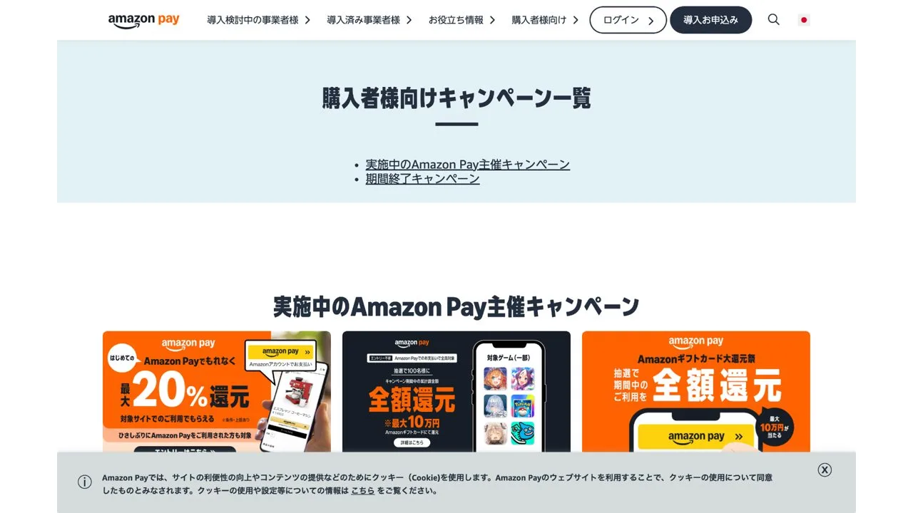
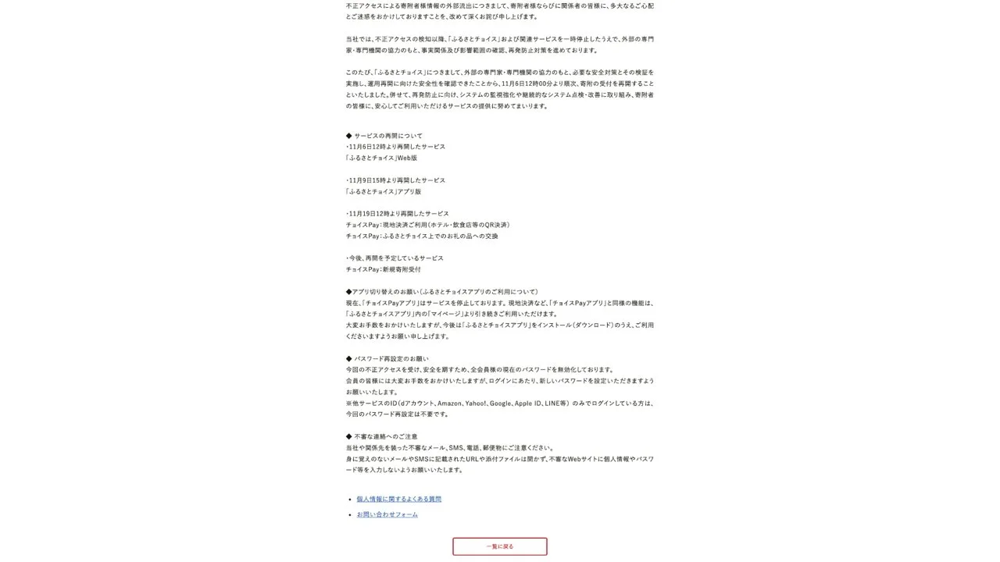

ふるさと納税5サイト（楽天ふるさと納税・さとふる・ふるなび・ふるさとチョイス・Amazonふるさと納税）を、寄付額別に比較しました。2026年11月22日時点の公式情報によると、寄付額が2万円までならふるなびが有利ですが、3万円を超えるとさとふるのほうが実質的にお得になりやすいことが分かりました。20万円の寄付では、その差は目安8,000円に広がります。

▶ この記事の内容を動画で見る（お金の総合チャンネル）012025年10月のポイント禁止後、何が残っているか
2025年10月1日から、ふるさと納税のポータルサイトが独自に付与するポイントは総務省の告示で禁止されました。ただし、クレジットカード会社やキャリア決済などの決済サービス側が通常付与するポイントは、この禁止の対象外です。各サイトは、この「禁止されなかった部分」でそれぞれ別の還元の仕組みを用意しています。

022万円までは「ふるなび」が有利
ふるなびには独自の「ふるなびマネー」という仕組みがあります。2026年11月時点では、全員対象で寄付額（チャージ額）に対して最大10%が増量されるキャンペーンが行われています。

ただし、この増量分には2,000円分という上限があります。 10%の還元で2,000円に達するのは寄付額2万円の時点なので、2万円を超える寄付では、増量分は2,000円のまま変わりません。
033万円を超えると「さとふる」が逆転する
さとふるは2026年8月から「チャージポイント」という仕組みを始めました。クレジットカードで事前にチャージすると1円＝1ポイントとして付与され、事前エントリーして対象日（ボーナスデー）にチャージすると数%相当が即時増量されます。この増量分には上限がありません。

そのため、寄付額が大きくなるほど、上限のあるふるなびより、上限のないさとふるのほうが有利になっていきます。10万円の寄付では、さとふるは目安5%で5,000円相当、ふるなびは上限の2,000円のままです。

注意具体的な還元率やキャンペーン内容は毎月のように変わります。寄付する直前に、各サイトの公式ページで最新の条件を確認してください。
04楽天・Amazon・ふるさとチョイスはどうか
楽天ふるさと納税は、楽天カードでの決済が唯一の還元手段です。通常分・カード特典分・「5と0のつく日」特典分を合わせた目安は3%ですが、楽天キャッシュを選べる自治体は限られ、選べた場合もこの特典の対象外になります。
Amazonふるさと納税は、Amazon Mastercardで決済した場合の通常ポイント（プライム会員目安2%・一般会員目安1.5%）が中心です。「Amazon Payで最大20%還元」というキャンペーンを見かけることがありますが、これはAmazon Payを決済手段として使える他のふるさと納税サイト向けの特典で、Amazonふるさと納税自体では使えません。

ふるさとチョイスには、寄付額の30%相当を現金ではなく「お礼の品」（デジタル商品券）として受け取れる「チョイスPay」という独自の仕組みがあります。対象自治体限定で、使える先もその地域の店舗か返礼品との交換に限られます。また2026年11月22日時点では、10月の不正アクセスの影響でチョイスPayの新規受付が一時停止中です（寄付の受付自体は再開済み）。

ポイントチョイスPayが再開すれば、数字の上では一番大きい還元になります。再開状況は公式サイトのお知らせページで確認してください。
05ワンストップ特例のオンライン申請
楽天・さとふる・ふるなび・ふるさとチョイスの4サイトは、マイナンバーカードとスマホがあればオンラインでワンストップ特例を申請できます（対応は寄付先の自治体によって異なります）。Amazonふるさと納税だけは、Amazon自身がオンライン申請を仲介しておらず、案内は紙の申請書の郵送が基本です（寄付先自治体が独自に対応していれば、そちらを使える場合もあります）。
マイナンバーカードを持っていない場合でも心配はいりません。5サイトすべてで、従来どおりの郵送によるワンストップ特例申請にも対応しています。
06まとめ
- 2万円までの寄付ふるなびが有利（還元最大10%、上限2,000円）
- 3万円を超える寄付さとふるが有利に逆転（チャージポイントの増量に上限なし）
- 20万円の寄付ふるなびとさとふるの差は目安8,000円
- チョイスPayは数字が大きいが対象自治体限定で、現在は新規受付停止中
- 還元率やキャンペーン内容は毎月変わるため、寄付前に公式サイトで最新情報を確認
寄付額別の実質早見表や、各サイトの詳しい仕組みは、動画でもまとめて解説しています。
07よくある質問
結局どのサイトが一番お得ですか？
寄付額によって変わります。目安としては、2万円程度までの寄付ならふるなび、それを超える寄付ならさとふるが有利になりやすいです。
複数のサイトで寄付しても大丈夫ですか？
問題ありません。控除の上限額は寄付先のサイト数に関係なく、年間の合計寄付額で決まります。
ワンストップ特例の「5自治体以内」は、サイトの数ですか？
いいえ、寄付先の自治体の数で数えます。複数のサイトをまたいで寄付しても、自治体の合計が5つ以内であればワンストップ特例を利用できます。
チョイスPayの新規受付はいつ再開しますか？
2026年11月22日時点では未定です。公式サイトのお知らせページで随時更新されています。